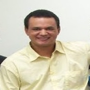

Sobre
O Arduino Day Natal é a edição local de um evento que acontece anualmente ao redor do mundo (mais informações em: day.arduino.cc). A nossa proposta consiste em realizar palestras, oficinas e mesas-redondas que envolvam Arduino e demais tecnologias, tais como Raspberry, desenvolvimento móvel, web e desktop, entre outros, e uma pequena competição. Todo o evento é produzido de forma colaborativa e voluntária pelos membros do GIM e colegas, com o principal objetivo de compartilhar conhecimento e difundir a Cultura Maker, Movimento Maker e Open Source no nosso estado.
Informações
As inscrições online estão encerradas, novas inscrições ocorrerão apenas presencialmente no dia do evento.
Todas as atividades são restritas aos inscritos no evento, portanto só será permitida a entrada de quem estiver com a pulseira de identificação adquirida no check-in do evento.
- Para aqueles que vão participar das oficinas:
- Palestras:
- Mesa-redonda:
As oficinas já estão esgotadas, mas a venda de rifas ainda está acontecendo na entrada da ECT para concorrer ao kit de Arduino da RoboCore no sorteio à ser realizado no final do evento.
Intermediária: Seguir o guia da oficina básica e também o Guia de Instalação da IDE Processing
Observações:
1 - Se você possui um notebook com uma bateria que dure por muito tempo sem a necessidade de carga (algo em torno de três horas), a sua vaga na oficina terá mais facilidade de ser garantida, pois limitamos a capacidade da turma, principalmente, por questão de estrutura elétrica. É necessário, porém, que a sua inscrição seja feita antes do dia do evento.
2 - Mesmo que você não for participar da oficina, poderá comprar a rifa e concorrer ao kit para iniciante, consequentemente, ajudando o GIM nas despesas.
As palestras ocorrerão paralelamente nos anfiteatros D e F. É possível conferir no cronograma o local e horário de cada uma delas. Basta escolher quais são de seu maior interesse e aproveitar. Diversas áreas e temas, desde drones à sistemas de saúde, serão abordados nas nossas palestras, com o intuito de abordar aplicações do arduino. Entretanto, este ano abrimos espaço para tratar de outros temas relevantes, tais como software livre e, também, para outros grupos regionais cujo propósito é compartilhar conhecimento, seja em desenvolvimento software ou hardware.
No evento acontecerão algumas mesas redondas com convidados de várias áreas. As mesas redondas seguirão o formato em que haverá um mediador e dois ou mais convidados para discutirem sobre o tema da mesa. Também será dado à platéia a oportunidade de fazer perguntas. Escolham a(s) mesa(s) que mais lhe interessam e participem!
Local
Escola de Ciência e Tecnologia - UFRN. Natal, Rio Grande do Norte
Cronograma
Os horários estão sujeitos à alterações.
| Palestra | Palestrante | Descrição | |
|---|---|---|---|
| Abertura ADG 2015 Anfiteatro D | 8h20 às 8h50 | Arduino Day é de comer? Na abertura, Tiago Hérique aluno da ECT e Coordenador do GIM dará inicio ao evento e explicará um pouco sobre o que é o Arduino, e do que se trata o Arduino Day, compartilhar é a chave! #conheça #contribua #compartilhe #MudarOMundo | |
| Check-in Recepção | 8h00 às 15h00 | - | |
|
|
Profº Me. Ivanilson França Vieira Júnior | 9h00 às 9h35 | Parece nome de filme, mas não é. Nesta palestra, o Professor do Instituto Federal do RN, Ivanilson França, nos contará como uma plataforma de desenvolvimento de hardware conseguiu mudar a realidade de um mortal, fazendo-o acreditar que o mundo é um lugar bonito de se viver, palavras dele! |
|
|
Profº Ivanês Oliveira Alexandrino e Profº Dr. Antônio Pereira Júnior | 9h00 às 9h50 | O professor Ivanês orientador do projeto vencedor do prêmio Samsung e o professor Antônio Pereira coordenador do Programa Escolas Acadêmicas participam de uma discussão sobre a influência da róbotica no ensino fundamental e médio, de como o perfil maker possibilita grandes mudanças na realidade da nossa sociedade. |
| Oficina A Sala 6 | 9h00 às 11h00 | Básica A | |
|
|
Profº Me. Ivanilson França Vieira Júnior, Lucas Pereira Wanderley Oliveira e Arthur Andrade Bezerra | 9h40 às 10h15 | Um bate-papo com hobbistas do aeremodelismo e quadricopteros sobre o processo de montagem de um VANT. O que é um VANT? Onde compra peças? Quais etapas seguir? |
|
|
Marcos Vinícius Ramos da Silva e Clemenson da Costa Alves | 10h00 às 10h40 | O objetivo é o desenvolvimento de um sistema embarcado de modo que contribua para a análise e desenvolvimento de um veículo experimental de categoria Off - Road voltado para o mercado de entusiastas que desejam um veículo barato, seguro, de fácil manutenção e transporte, divertido de dirigir e que vença diversos tipos deterreno. |
|
|
Tiago Tobias Freitas | 10h30 às 11h00 | Medir pontência em corrente alternada não é algo muito simples, porém, Tiago fala um pouco sobre o shield do ADE7753 e sua biblioteca para Arduino, e mostra como você pode fazér seu proprio medidor de energia inteligente. |
|
|
Profº Dr. Aquiles Medeiros Filgueira Burlamaqui | 10h45 às 11h25 | Um dos participantes do 1º Arduino Day Natal #GIM, o Professor Aquiles e seus alunos estão de volta! Irão falar sobre a missão do projeto Um Robô por Aluno (URA) e de como transformar a educação do RN e do Brasil utilizando a robótica como carro-chefe desta jornada. |
| Almoço | 11h25 às 13h00 | - | |
|
|
Marcel da Câmara Ribeiro Dantas | 13h00 às 13h30 | A influência do arduino na construção de equipamentos e sistemas que auxiliam a área da saúde. |
| Oficina B Sala 6 | 13h00 às 15h00 | Básica B | |
| Oficina C Sala 7 | 13h00 às 15h00 | Intermediária | |
|
|
Potilivre e Pyladies | 13h35 às 14h15 | Como dar o seu primeiro passo no mundo da programação e um pouco mais sobre o software livre. |
|
|
Profº Dr. João Moreno Vilas Boas de Souza Silva | 13h40 às 14h20 | Pensem em um mundo com pequenas aeronaves não tripuladas cruzando nosso espaço aéreo, capazes de realizar até as tarefas mais banais. Agora imaginem casas totalmente conectadas aos nossos smartphones por meio da internet! O que até décadas atrás poderia até ser considerada uma obra de ficção científica, hoje pode ser algo tão comum como pedir uma pizza ou mesmo ligar uma televisão. Os Drones e a Domótica se tornaram mais do que apenas “termos da moda” para ocupar um lugar de cada vez mais destaque em nosso estilo de vida. Seria ainda melhor, se pudéssemos desenvolver esses projetos com dispositivos de fácil programação, prototipação e baixo custo, não é verdade?! Bem vindo ao presente com a plataforma Arduino… |
|
|
 Julio Cesar Paulino de Melo | 14h30 às 15h00 | O laboratório de automação e robótica (LAR) tem trabalhado nos últimos anos com vários projetos usando arduino em áreas variadas. Nesta palestra, conversaremos sobre o laboratório, sua organização, os projetos que utilizam arduino em seu escopo, além de perspectiva para futuros projetos. |
|
|
Tiago Hérique Silva de Almeida e Eugênio Pacelly Brandão Araújo | 14h30 às 15h00 | Ctrl+C e Ctrl+V e um pouco de criatividade, como a prototipagem tem crescido e se tornado uma prática diária do LAR. Desde peças modeladas em 3D à cópias feitas em moldes de gesso. |
|
|
Profº Dr. Leonardo Augusto Casillo | 15h15 às 16h00 | Descobri o arduino! E agora? Os desafios acadêmicos de transformar uma ferramenta de prototipagem em uma ferramenta de motivação em um curso que possui software como essência, satisfazer as expectativas dos amantes de hardware e despertar os interesses dos não-simpatizantes. Um estudo de caso próprio vivido no curso de Ciência da Computação na UFERSA-Mossoró. |
| Encerramento Anfiteatro D | 16h00 às 17h00 |
Palestrantes
-
Profº Me. Ivanilson França Vieira Júnior
O Profº Me. Ivanilson França Vieira Júnior possui Graduação em Tecnologia em Desenvolvimento de Software pelo Centro Federal de Educação Tecnológica do Rio Grande do Norte, possui mestrado em Sistemas de Computação pela Universidade Federal do Rio Grande do Norte. Tem experiência na área de Ciência da Computação, com ênfase em Sistemas de Informação, atuando principalmente nos seguintes temas: Multimídia, Sistemas Distribuídos e Redes de Computadores.
-
Profº Ivanês Oliveira Alexandrino e Profº Dr. Antônio Pereira Júnior
O Profº de física Ivanês Oliveira Alexandrino leciona na Escola Estadual Tristão de Barros, em Currais Novos. Ele foi orientador do projeto “Equilíbrio: para uma inclusão sustentável e um meio ambiente melhor” que foi o vencedor de um prêmio internacional da Samsung. O Profº Dr. Antônio Pereira Júnior possui Mestrado e Doutorado em Ciências Biológicas (Biofísica) pela Universidade Federal do Rio de Janeiro e Pós-Doutorado no Duke University Medical Center. Atualmente é professor adjunto da Universidade Federal do Rio Grande do Norte e coordenador do Programa Escolas Acadêmicas.
-
Profº Me. Ivanilson França Vieira Júnior, Lucas Pereira Wanderley Oliveira e Arthur Andrade Bezerra
Lucas Pereira Wanderley Oliveira é graduando em Ciências e Tecnologia, trabalha no Laboratório de Automação e Robótica no projeto de um veículo autônomo não tripulado, na área de controle. Cinco anos de experiência com Arduino e dois anos de Raspberry. Muito interesse em automação em geral e quadricópteros. Arthur Andrade, Trabalha no Laboratório de Automação e Robótica da UFRN, atua no projeto da Plataforma Imersiva Multidimensional, mini hexapod project (anterior) com conhecimento em Microcontroladores, programação, eletrônica, gambiarras e um pouco te antenas. Tem interesse na area de Telecomunicações
-
Marcos Vinícius Ramos da Silva e Clemenson da Costa Alves
Marcos Vinícius Ramos da Silva é formado eletrotécnica pelo CT-gásER, trabalhou na empresa COATS corrente LTDA como aprendiz e depois como encarregado de manutenção elétrica. Hoje é professor no curso técnico de eletrotécnica do CEPEP e estudante do curso de bacharelado em ciências e tecnologia e participa do projeto Baja SAE da UFRN, onde é chefe da eletrônica e responsavel por gestão do conhecimento. Clemenson possui formação no curso técnico de programador web pelo Metrópole Digital pela Universidade Federal do Rio Grande do Norte (UFRN) e atualmente está cursando o bacharelado em Ciências e Tecnologia na UFRN com ênfase em Engenharia Mecânica. Atuou como pesquisador na área de robótica educacional e atualmente é vice capitão na Equipe Car-Kará Baja SAE da UFRN.
-
Tiago Tobias Freitas
Tiago Tobias Freitas é técnico em eletrônica. Vem cursando Bacharelado em C&T e atuando na área de microoeletrônica desde 2003, onde desenvolve projetos voltados para automação industrial. Atuou na área acadêmica ministrando aulas em cursos técnicos e profissionalizante no SENAI entre 2006 e 2012, onde elaborou projetos premiados e publicados em revista especializada. Atualmente é sócio proprietário da LUNALTAS, empresa incubada no INOVA METRÓPOLE, que tem foco em desenvolvimento de produtos de software e hardware com caráter inovador. Membro do grupo de pesquisa em eficiência energética da Escola de Ciências e Tecnologia - UFRN, onde desenvolve sistemas embarcados prototipados na plataforma Arduino, com intuito de aumentar a eficiência energética de instalações elétricas prediais e industriais.
-
Profº Dr. Aquiles Medeiros Filgueira Burlamaqui
O Profº Dr. Aquiles Filgueira Burlamaqui possui graduação em Ciências da Computação, mestrado em Sistemas e Computação e doutorado em Engenharia Elétrica pela Universidade Federal do Rio Grande do Norte. É pesquisador do Laboratório Natalnet-DCA , atuando principalmente nos seguintes temas: Ambientes Virtuais Colaborativos Massivos, TV Digital Interativa, Sistemas Web, Aplicações de Robótica, Realidade Virtual e Engenharia de Software.
-
Marcel da Câmara Ribeiro Dantas
Marcel é graduando em Engenharia de Computação e Automação Industrial na Universidade Federal do Rio Grande do Norte (UFRN), pesquisador no Laboratório de Inovação Tecnológica em Saúde (LAIS) no Hospital Universitário Onofre Lopes (HUOL), ativista de Software Livre com expertise em Telerradiologia, Telemedicina e Automação Hospitalar.
-
Potilivre e Pyladies
Potilivre é um Grupo de Usuários de Software Livre atuante no estado do Rio Grande do Norte, fundado em 2013. Somos uma organização independente, composta por voluntários, para o apoio à filosofia e o uso do Software Livre. Sua missão é servir como principal ponto de integração entre as comunidades de Software Livre do nosso Estado, oferecendo uma estrutura simples e eficiente para o direcionamento e a organização dos esforços colaborativos. Pyladies é um grupo internacional, com foco em ajudar mais mulheres a tornarem-se participantes ativas e líderes de comunidades Python de código aberto. Sua missão é promover, educar e impulsionar a existência de uma comunidade Python diversificada através de sensibilização, educação, conferências, eventos e encontros sociais. Nosso objetivo não é segregar, mas sermos um meio de integrar as mulheres a programação.
-
Profº Dr. João Moreno Vilas Boas de Souza Silva
O Profº Dr. João Moreno Vilas Boas de Souza Silva possui graduação em Tecnologia em Automação Industrial pelo Instituto Federal de Educação, Ciência e Tecnologia do Rio Grande do Norte, Especialização, Mestrado e Doutorado em Engenharia Mecânica pela Universidade Federal do Rio Grande do Norte. Possui experiência profissional nas áreas de automação, desenvolvimento de software e refino de petróleo. É professor efetivo do IFRN com interesse nas áreas de Eletrônica Digital e Microcontroladores.
-
Julio Cesar Paulino de Melo
Julio Cesar Paulino de Melo é graduado em engenharia de computação, com ênfase em automação na Universidade Federal do Rio Grande do Norte. Possui mestrado em Engenharia Elétrica e Computação pela UFRN. Tem experiências na área de sistema de informação, ambientes vituais interativos, TV digital, Aplicações interativas para TV digital, sistemas embarcados e sistemas dinamico e estaticos em FPGA.
-
Tiago Hérique Silva de Almeida e Eugênio Pacelly Brandão Araújo
Tiago Hérique Silva de Almeida é graduando em Ciências e Tecnologia com ênfase em Eng. Mecatrônica na UFRN, é o fundador do Grupo Interdisciplinar de Mecatrônica (GIM) da UFRN. Tem experiência na área de Robótica, Mecatrônica e Automação. Eugênio Pacelly Brandão Araújo é graduando em Ciências e Tecnologia e atualmente é voluntário no projeto Nvant e também é um dos projetista da plataforma de simulação de sistemas embarcados em um projeto da Universidade Federal do Rio Grande do Norte.
-
Profº Dr. Leonardo Augusto Casillo
O Profº Dr. Leonardo Augusto Casillo possui graduação em Engenharia da Computação pela Universidade Potiguar, mestrado em Sistemas e Computação e doutorado em Engenharia Elétrica e de Computação pela Universidade Federal do Rio Grande do Norte. É professor da Universidade Federal Rural do Semi-Árido desde 2009, lecionando disciplinas de Circuitos Digitais, Microprocessadores e Microcontroladores. Tem experiência na área de Ciência da Computação, com ênfase em hardware, atuando principalmente nos seguintes temas: processadores acadêmicos, processadores RISP e arquiteturas microprogramadas.